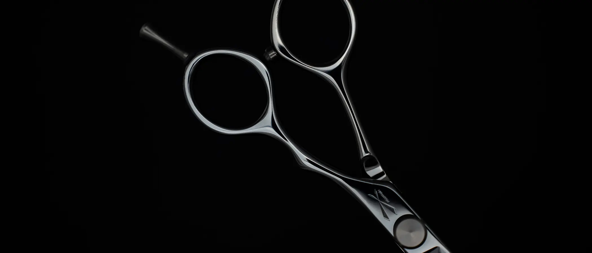
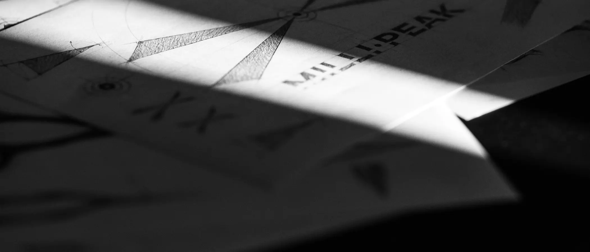
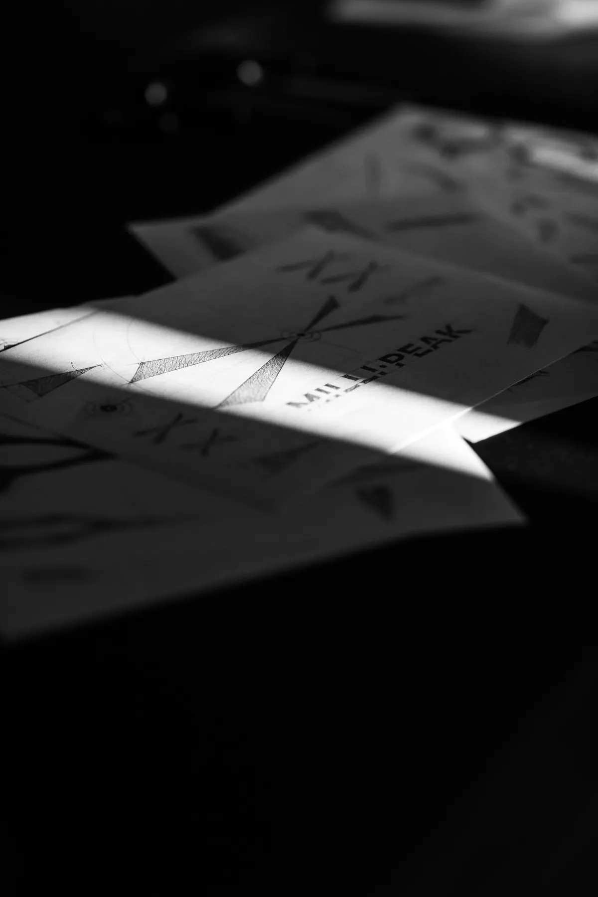

品牌故事.story
少即是剪
拿掉多餘剛好手感
less, but sharper.
nothing extra. just right in hand.

工匠精神 craft
對設計師來說，剪刀是手的延伸。
它替你完成每一個想法，卻很少被客人記住。它本來就該這樣，安靜、可靠，把光留給設計師和髮型。毫剪，就是這樣來的。
一個髮型師用了半生、用過很多把剪刀，才打磨出這個品牌。它不浮誇，不為了耍帥，只照著髮型師真正的需要來做。
螺絲、耐磨片、刀鋒、頭段的圓弧，每一處都反覆測試、反覆微調。尺寸、寬度、手感、亮度、鋒利、弧度，沒有一樣是多餘的。
低調，但不代表沒有質感。實用是前提，每個細節，都經過深思熟慮。這是我的半生，安靜地放在你手裡。
人像待補
portrait forthcoming
關於魏子淵的人像素材尚未入庫；此區預留雙欄骨架，勿暫代他人面孔。
關於 about
魏子淵
一個髮型師用了半生、用過很多把剪刀，才打磨出這個品牌。
人像與簡介細節待補；此處僅保留版面骨架。
標誌 mark
手繪標誌稿尚未入庫；此處先放品牌印刷物料靜幀。手稿補齊後替換。


設計理念 design
說到當代設計，很多人第一個想到的，是包浩斯。在它之前，很多設計繁複華麗，是拿來欣賞的，並沒有真正走進生活。
1919年，包浩斯在德國威瑪成立。1925年，包浩斯的老師 Marcel Breuer，用彎曲的鋼管做出一張椅子，輕、簡單、可以量產，設計從此走進日常。後來，密斯·凡德羅說：少即是多
1976年，Dieter Rams 和 Dietrich Lubs 為百靈設計的 ET 22 計算機，把多餘的都拿掉，只留下好用；Rams 說：少，但更好。
毫剪，就是照這個思路誕生的。實用，不花俏，每個細節都經過推敲。它不只是一把剪刀，是一件被認真設計過的單品。
少即是剪
拿掉多餘剛好手感
less, but sharper.
nothing extra. just right in hand.